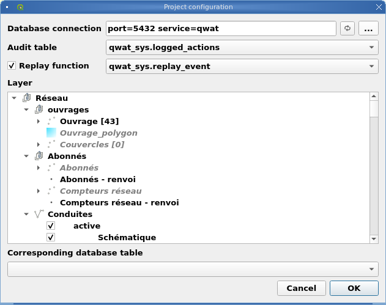
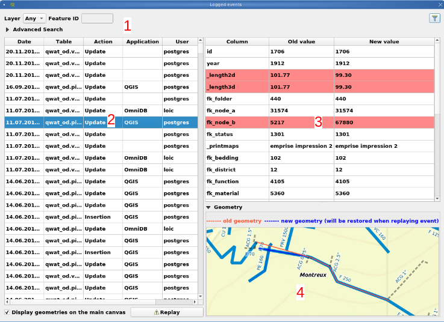
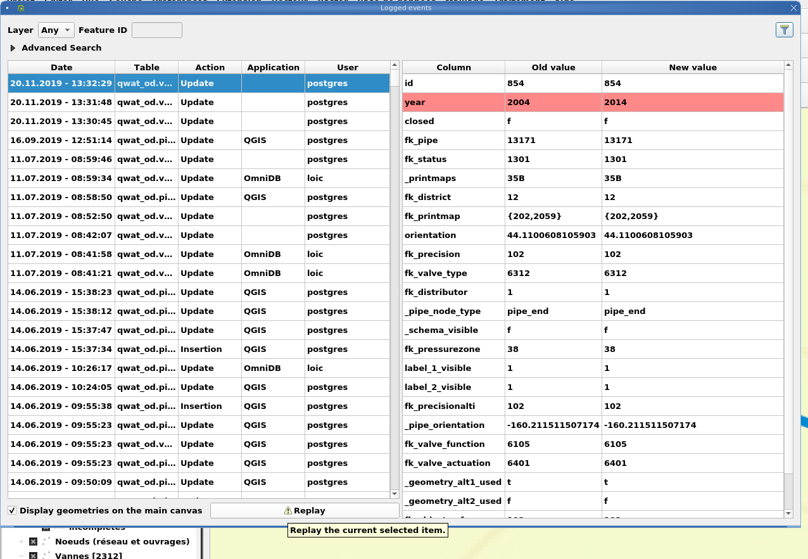
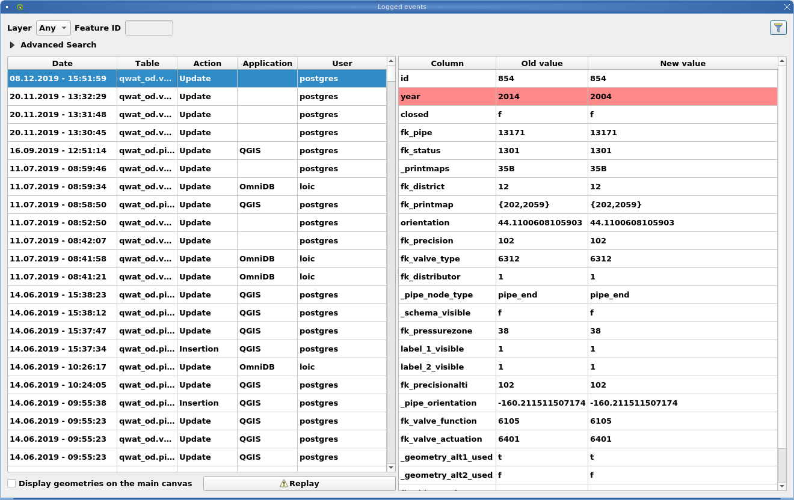

3.8. Prohlížeč historie
Zásuvný modul pro prohlížení historie PG umožňuje načíst změny v databázi QWAT.
3.8.1. Konfigurační plugin
Nejprve musíte nakonfigurovat plugin pro relaci takto:
3.8.2. Použití
Okno „protokolované události“ se skládá ze 4 částí.
Část identifikující nástroje používané k filtrování úprav v databázi.
Protokolované události s datem změny, tabulkou, typem akce „Aktualizovat / Odstranit / Vložit“, aplikací a uživatelem, který provedl změnu.
Pohled porovnávající data před a po změně. Červené čáry jsou ty upravené.
Pokud byla geometrie změněna, rozdíl bude zobrazen na ploše mapy.
3.8.3. Funkce opakování
Pokud jste nakonfigurovali možnost opakování, můžete opakovat akce. Příklad níže:
Skutečná hodnota:
Vyberte událost, kterou chcete přehrát, a její hodnoty se stanou aktuálními. Příklad roku, který se opět stane rokem 2004:
